01 · Product systems
Performance product roadmaps
Design thinking + computational foresight for footwear and wearables; orchestrated workshops align execs, designers, and engineers.
Computational design systems
Design engineer guiding performance brands through digital-to-physical workflows: parametric footwear, biomechanics labs, and XR proof-of-concept moments that win internal alignment.
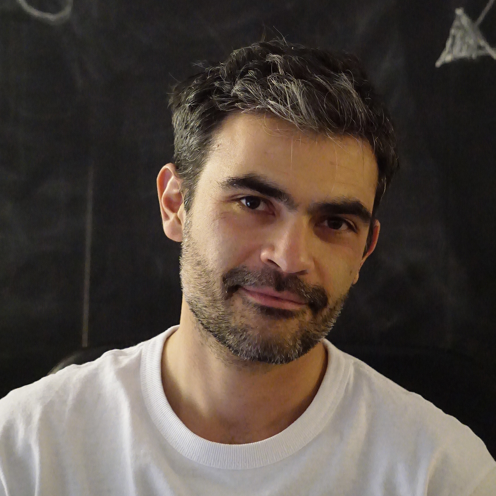
Moon Rabbit Adaptive Lab · Milan, Italy
Trusted by innovation teams at
Capabilities
From research sprints to CAE-driven launches, each engagement blends engineering rigor with expressive interaction design.
Design thinking + computational foresight for footwear and wearables; orchestrated workshops align execs, designers, and engineers.
Linking FEA, generative strategies, and prototyping so lattices, knit bodies, and molds are validated before tooling investments.
Turning research datasets into immersive prototypes—Unity, AR, IoT—for stakeholder buy-in and on-site athlete testing.
Pathway
A CV-inspired snapshot that connects engineering roots, global residencies, and the launch of Moon Rabbit Adaptive Lab.
BSc Mechatronics Engineering ? UNAM ? led early CAE experiments for climate-positive hardware.
Politecnico di Milano ? blends product semantics with simulation, paving the way to MIT Design Lab residency.
MIT Design Lab, PUMA Innovation, Ford CAE, Huawei Aesthetic Research Center, Samsung pilot department launch.
Computational design consultancy crafting bespoke workflows across footwear, performance, and XR storytelling.
Partner
Send a brief, request a remote workshop, or book lab time in Milan. Every engagement aligns business constraints with expressive experimentation.
Milan ? CET ? Remote friendly
Portfolio
Cross-disciplinary sprints that weave CAE, XR, and physical prototyping for global partners.
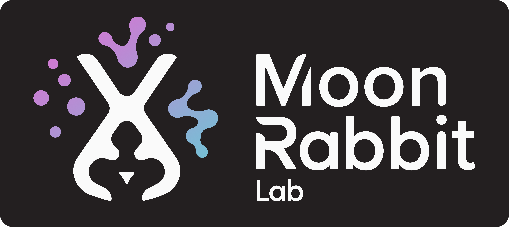
Consultancy
Computational design studio linking CAE, XR, and material libraries for performance brands.
Visit site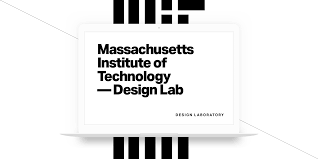
Residency
Interactive research artifacts for health, mobility, and wearable computing initiatives.
Read case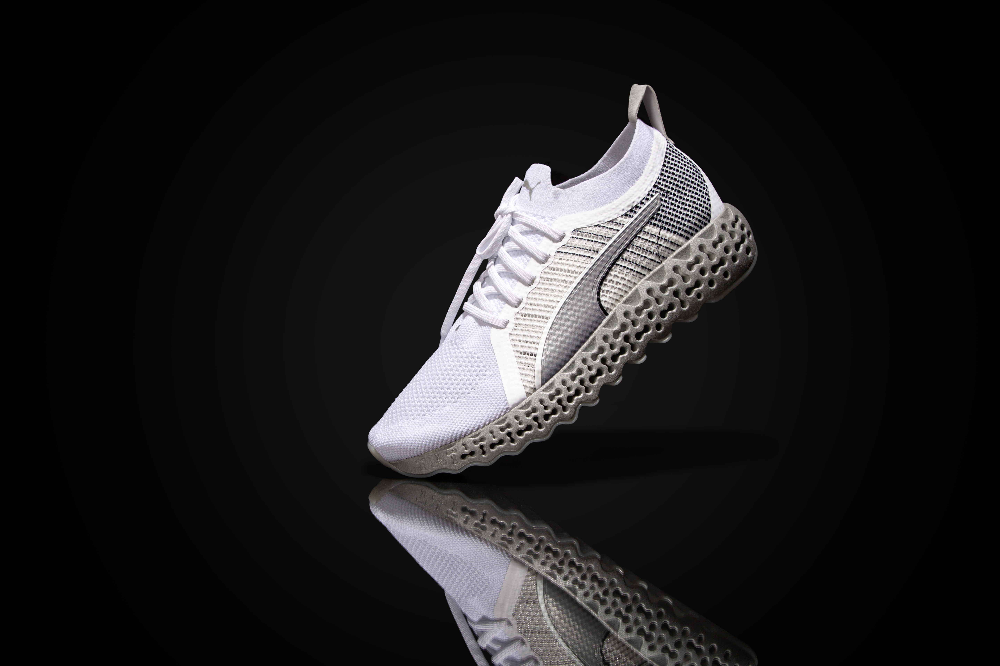
Footwear
Generative midsole and CAE validation to launch the cushioning system across categories.
Open projectAutomotive CAE
Advanced CAE + DFM pipelines for mobility components, balancing manufacturability and vision.
View summary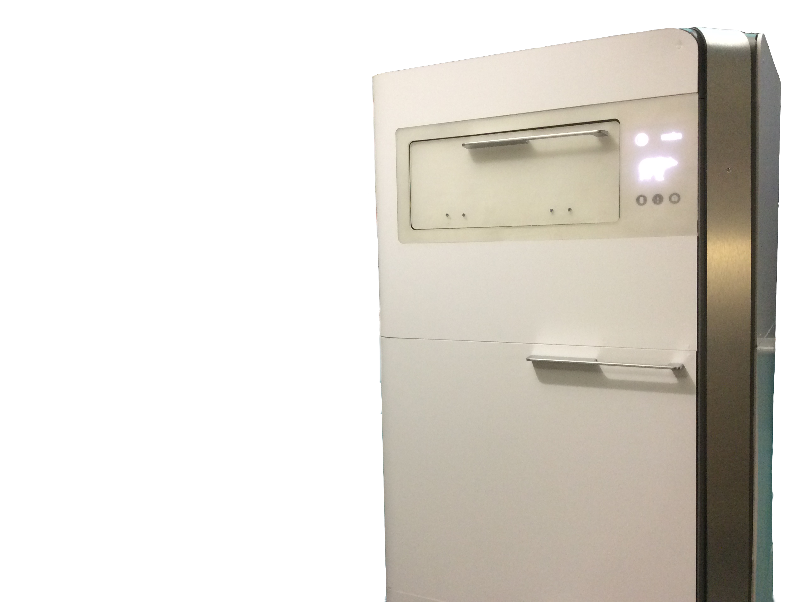
XR prototype
Portable Unity setup delivering CAE overlays to athletes right on the track.
See workflow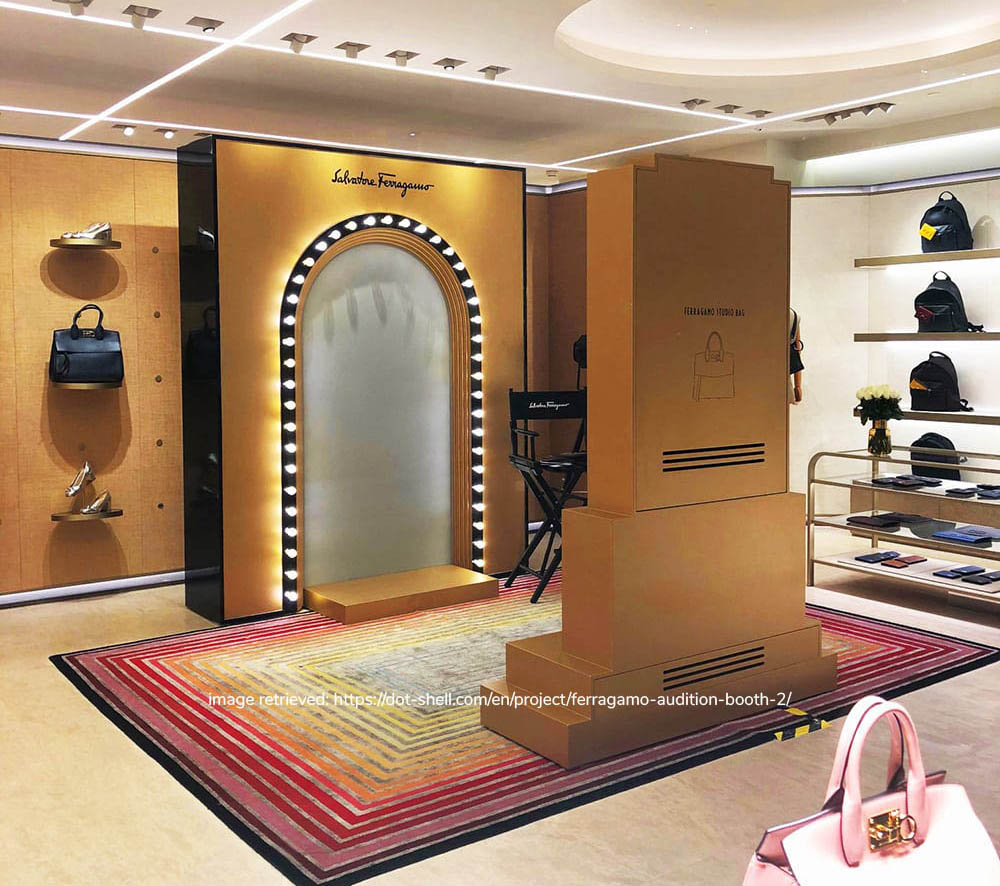
Immersive R&D
Software tooling and installations for film and arts partners to explore new narratives.
Explore stories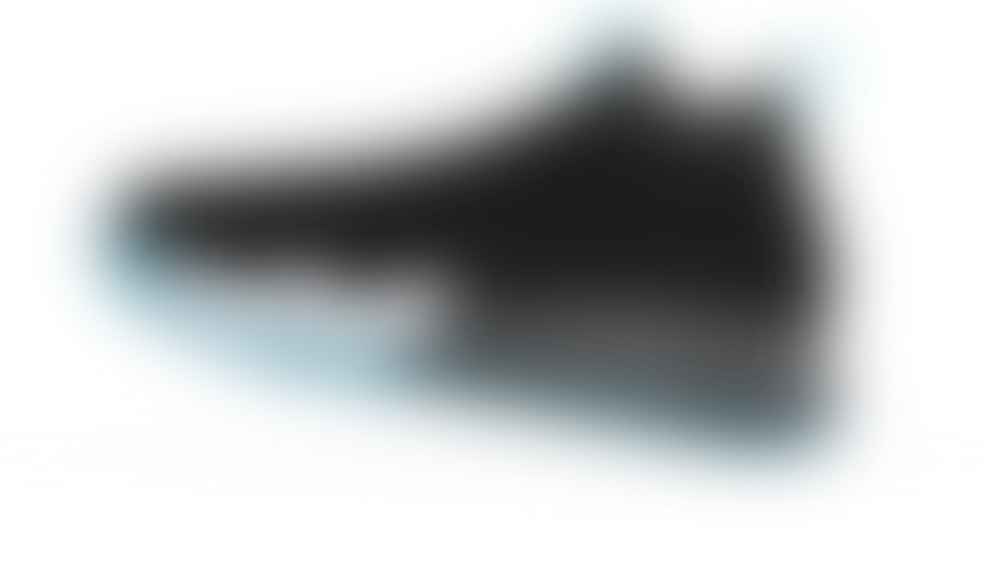
Footwear
Computational cushioning and performance validation for the court-specific Xetic launch.
View case
Product design
Industrial design sprint for an autonomous travel companion, balancing form and DFM.
Open project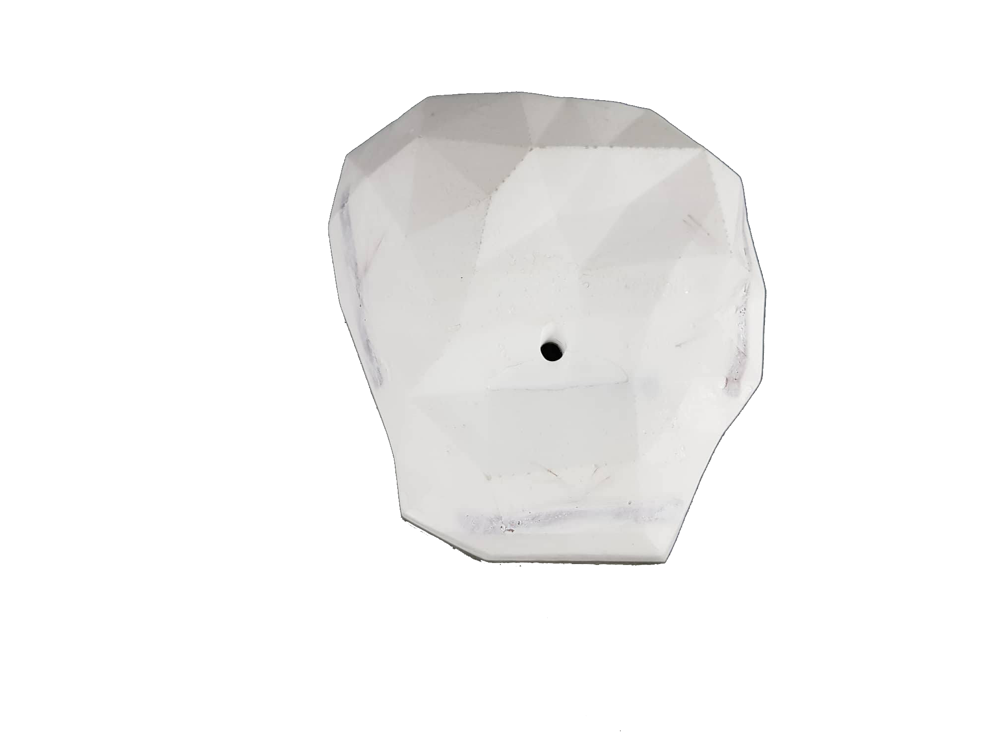
Interactive
Unity-driven climbing experience tying motion capture to smart holds for training.
See experience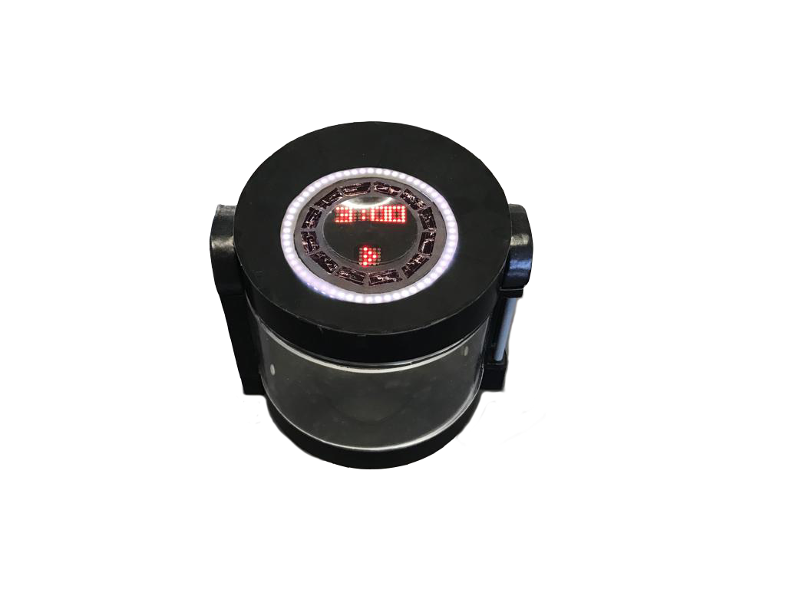
IoT
Connected heating system blending IoT electronics, industrial design, and digital service layers.
View details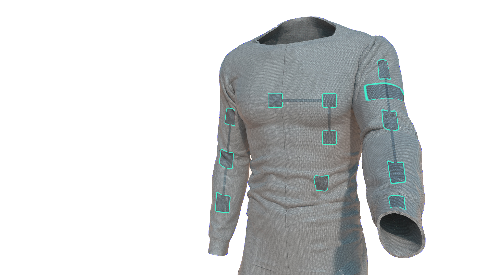
XR
Networked AR/VR installation demonstrating collaborative storytelling for live events.
Open story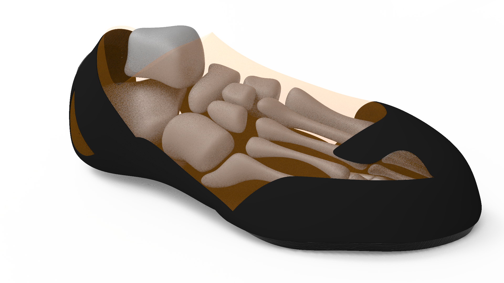
CAE
Finite element simulations to optimize climbing shoe stiffness and sensitivity before tooling.
See analysisDesign thinking
Stanford ME310 collaboration delivering a holistic cold-therapy product ecosystem.
Explore prototype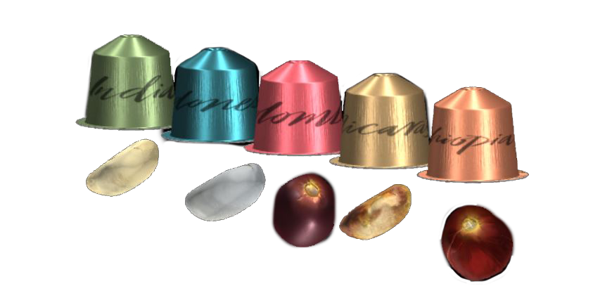
AR experience
Hololens-powered retail concept merging sensory cues with responsive digital overlays.
View concept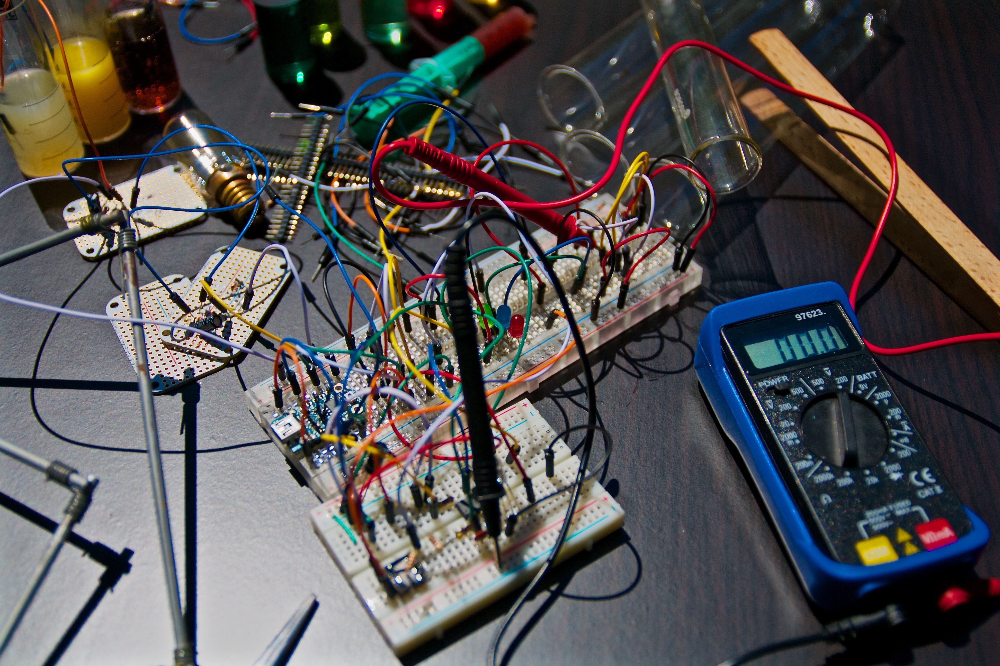
Engineering mix
Compilation of engineering explorations spanning robotics, sensing, and rapid prototyping.
Browse gallery